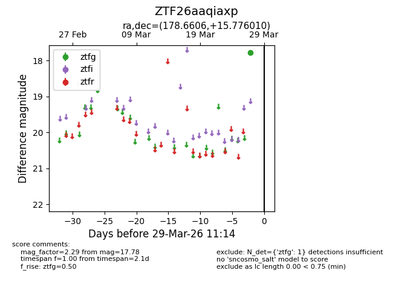
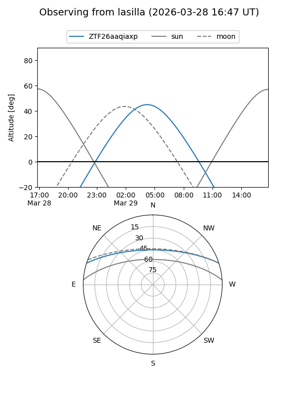
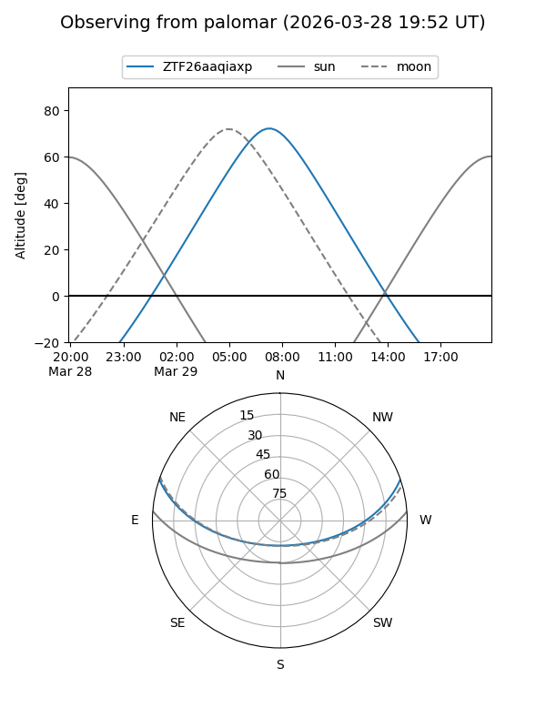

ZTF26aaqiaxp
Target ZTF26aaqiaxp at 2026-03-29 11:17
Aliases and brokers:
FINK: link
Lasair: link
ALeRCE: link
alt names
ZTF26aaqiaxp (ztf,fink_ztf)
Coordinates:
equatorial (ra, dec) = 178.6606,+15.77601
equatorial (HMS+DMS) = 11:54:38.55,+15:46:33.64
galactic (l, b) = (250.7829,+72.60584)
Flags:
Photometry:
last ztfg=17.78
1 ztfg detections
Lightcurve

Visibility


Additional plots